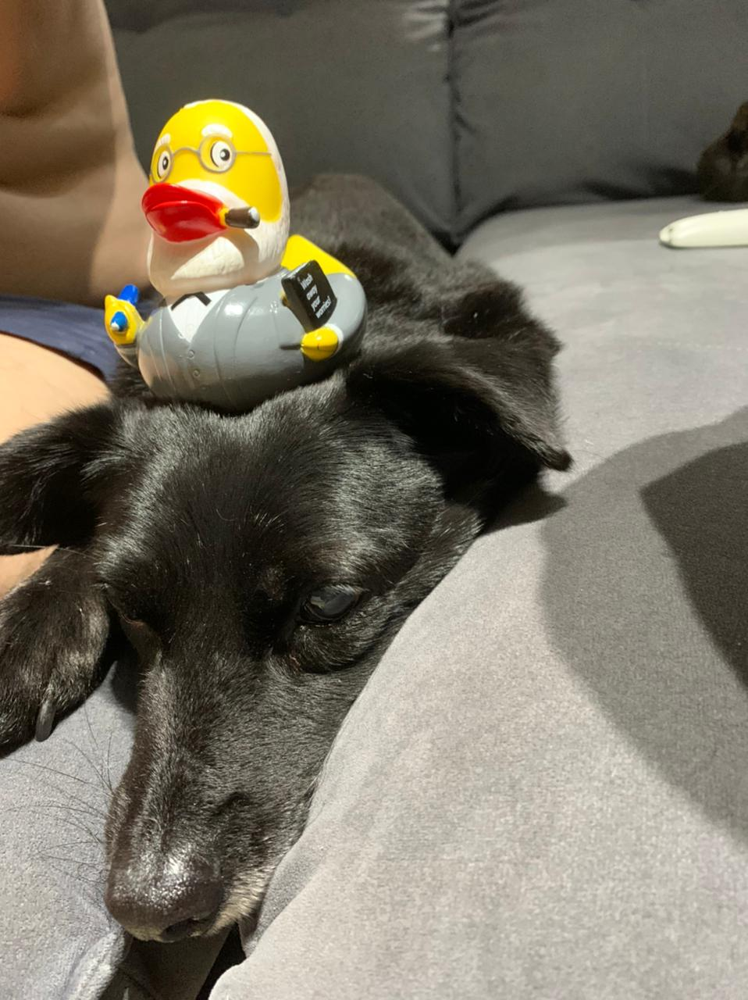

Samba is an 12-yr old dog. He got hit by a car many years ago and lost one of his leggs because of a complication during cirgury. Nobody wanted to addopt him, until 2019 when my friends met him - it was love at first sight.
He won't make a fuss about anything, but his bark sure scares and makes her sisters behave and respect his personal space. His hair is so soft and his chubiness is so cute, but if you squeeze him he barks in such a high note that seems like you are hurting him.
Family

What a lovely family, right?
Now he lives with his mom, dad, 2 crazy dog-sisters, human-sister Liz (1yr old, looks like Boo from Monsters Inc.), and 1 old aunt-dog.
Let's give some love to Santo Pet instagram, the ONG where Samba was taken care of...
What a lovely family, right?
Now he lives with his mom, dad, 2 crazy dog-sisters, human-sister Liz (1yr old, looks like Boo from Monsters Inc.), and 1 old aunt-dog.
Let's give some love to Santo Pet instagram, the ONG where Samba was taken care of...